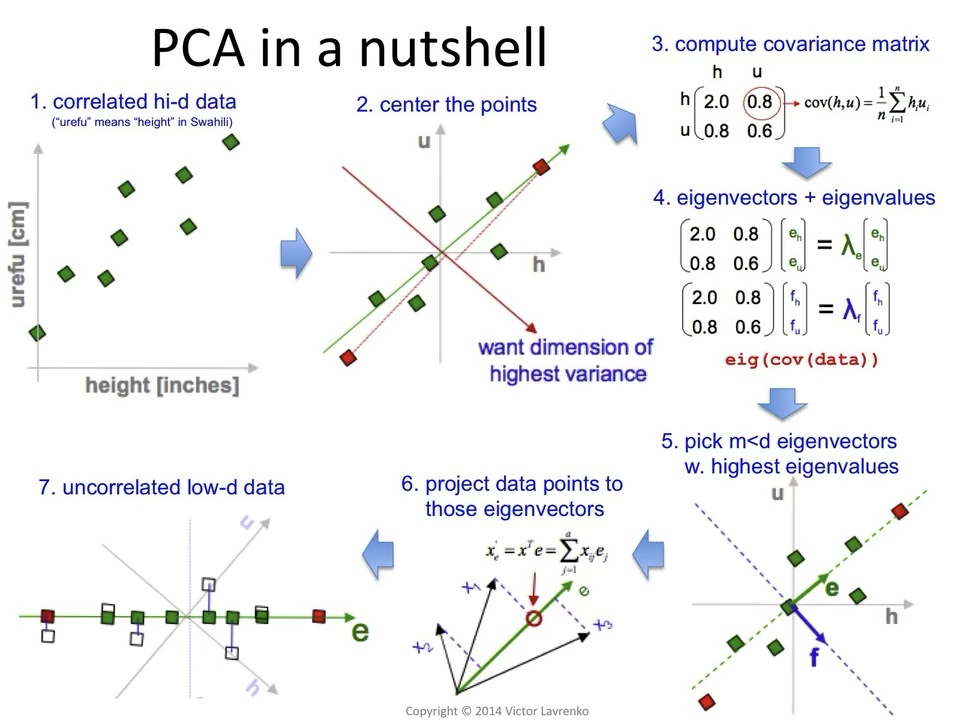
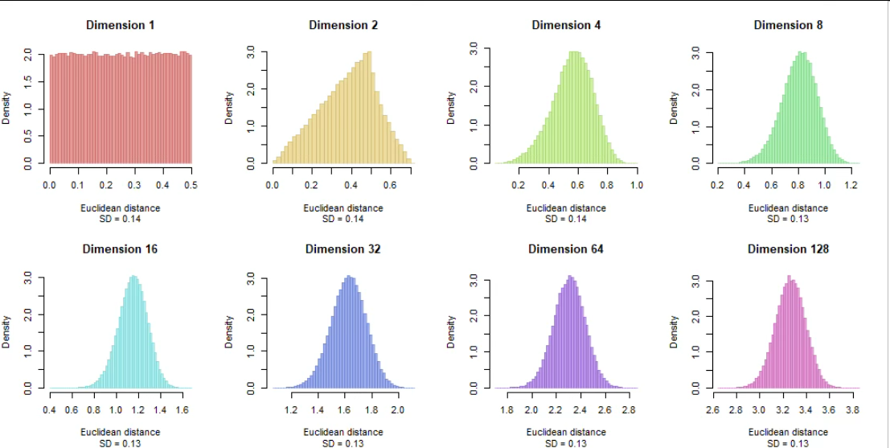

MLDL 비지도학습
Chapter 1. PCA는 차원축소가 아니라 분산 모형이다
비지도학습은 반응변수 \(Y\)가 주어지지 않은 상태에서 데이터 자체의 구조를 요약하는 방법론이다. 그중 주성분분석(PCA)은 흔히 차원축소 기법으로 소개되지만, 통계적 관점에서 PCA의 본질은 차원을 줄이는 데 있지 않다. PCA는 공분산 구조를 가장 효율적으로 설명하는 방향을 찾는 분산 기반 모형이다.
이 장에서는 PCA에 대한 대표적인 오해를 바로잡고, 분산 최대화가 가지는 통계적 의미와 공분산 행렬과의 연결을 체계적으로 설명한다. 이를 통해 PCA를 단순한 전처리 기법이 아니라, 비지도학습의 대표적인 분산 모형으로 재해석한다.
PCA의 목적은 차원 축소가 아니라 분산 구조의 요약이다.
분산 최대화는 신호를 가장 잘 보존하는 방향을 찾는 과정이다.
주성분은 공분산 행렬의 고유벡터이며, 고유값은 각 방향이 설명하는 분산이다.
PCA는 비지도학습의 대표적인 분산 기반 모형이다.
1. PCA 목적에 대한 오해
”차원을 줄이기 위한 기법”이라는 오해
PCA는 흔히 고차원 데이터를 저차원으로 축소하는 기법으로 설명된다. 그러나 이는 PCA의 결과에 대한 설명일 뿐, 목적에 대한 설명은 아니다. PCA의 핵심 목적은 차원을 줄이는 것이 아니라, 데이터의 변동성을 가장 잘 설명하는 방향을 찾는 데 있다.
차원 축소는 이 과정에서 자연스럽게 따라오는 결과일 뿐이며, PCA 자체가 해결하려는 문제는 데이터가 어떤 방향으로 가장 크게 변동하는가를 파악하는 것이다.
PCA가 답하려는 질문
PCA는 다음과 같은 질문에 답한다. 데이터는 어떤 방향으로 가장 많이 퍼져 있는가, 여러 변수 간의 상관 구조는 어떤 축으로 요약될 수 있는가, 정보 손실을 최소화하면서 변동성을 표현하려면 어떤 좌표계가 적절한가. 이 관점에서 PCA는 새로운 변수를 만드는 문제가 아니라, 좌표계를 회전시키는 문제로 이해하는 것이 정확하다.
2. 분산 최대화의 통계적 의미
첫 번째 주성분의 정의
중심화된 데이터 행렬 \(X\)에 대해, 첫 번째 주성분 방향 \(w_{1}\)은 다음 최적화 문제의 해로 정의된다.
\(w_{1} = \arg\max_{\parallel w \parallel = 1}w^{\top}Sw,S = \frac{1}{n}X^{\top}X\), 여기서 \(S\)는 표본 공분산 행렬이다. 즉, 첫 번째 주성분은 해당 방향으로 투영했을 때 분산이 최대가 되도록 하는 방향이다.
왜 분산을 최대화하는가
분산은 통계적으로 데이터가 얼마나 넓게 퍼져 있는지를 나타내며, 관측값 간 차이의 크기와 구조적 신호의 크기를 반영한다. 노이즈가 평균적으로 균등하게 분포한다고 가정하면, 분산이 큰 방향일수록 신호 대비 노이즈 비율이 큰 방향으로 해석할 수 있다. 이러한 이유로 PCA는 신호를 가장 잘 보존하는 방향을 찾는 절차로 이해된다.
최소제곱 관점에서의 동치성
PCA는 다음과 같은 최소제곱 문제와도 동치이다.
\[\min_{\text{rank}(Z) = k} \parallel X - Z \parallel_{F}^{2}\]
즉, PCA는 최소제곱 의미에서 원래 데이터를 가장 잘 근사하는 저차원 표현을 제공한다. 이 역시 차원을 줄이기 위한 기법이라기보다, 분산 설명력을 최적화하는 문제로 해석하는 것이 적절하다.

3. 공분산 구조와 주성분
공분산 행렬의 고유분해
공분산 행렬 S는 다음과 같이 고유분해된다.
\(S = V\Lambda V^{\top}\), 여기서 V의 열벡터는 주성분 방향에 해당하는 고유벡터이며, \(\Lambda\)의 대각 원소는 각 방향이 설명하는 분산 크기인 고유값이다. 고유값이 클수록 해당 주성분이 설명하는 변동성의 비중이 크다.
주성분 점수의 의미
\(j\)번째 주성분 점수는 다음과 같이 정의된다.
\(Z_{j} = Xv_{j}\).
이는 원래 변수들의 선형결합으로 이루어진 새로운 변수이며, 서로 비상관(상관계수=0)이고 분산이 고유값 \(\lambda_{j}\)인 특징을 가진다. 이 관점에서 PCA는 상관된 변수들을 비상관 변수로 재표현하는 방법이다.
설명분산비율의 통계적 해석
\(\text{Explained Variance Ratio}_{j} = \frac{\lambda_{j}}{\sum_{k = 1}^{p}\lambda_{k}}\)
설명분산비율은 전체 변동성 중에서 특정 주성분이 차지하는 비중을 나타낸다. 이는 단순한 비율이 아니라, 데이터 구조 중 특정 방향이 가지는 상대적 중요도를 나타내는 통계적 지표로 해석된다.
4 PCA를 분산 모형으로 다시 보기
암묵적 확률모형
PCA는 다음과 같은 확률적 해석을 갖는다.
\[X = ZW^{\top} + \varepsilon,\varepsilon \sim \mathcal{N}(0,\sigma^{2}I)\]
여기서 Z는 저차원 잠재변수, W는 적재행렬(loadings), \(\varepsilon\)는 등분산 잡음이다. 이는 확률적 요인모형의 특수한 형태로 볼 수 있다.
비지도학습에서 PCA의 위치
이러한 관점에서 PCA는 단순한 전처리 기법이 아니라, 분산 구조를 통해 데이터의 잠재적 구조를 요약하는 비지도 확률모형에 해당한다. PCA는 라벨 없이도 데이터의 주요 변동 패턴을 포착하는 대표적인 분산 기반 학습 방법이다.
| 관점 | PCA의 역할 |
| 알고리즘 | 차원축소 |
| 선형대수 | 직교기저 변환 |
| 통계 | 분산 구조 요약 모형 |
| 확률 | 잠재변수 모형의 근사 |
5. PCA의 한계와 오해: 언제 쓰면 안 되는가
PCA는 강력한 도구이지만, 모든 데이터 분석 상황에 적합한 방법은 아니다. PCA에 대한 대표적인 오해는 분산이 크면 곧 유용한 정보가 많다고 믿는 것이다. 그러나 분산이 크다는 사실 자체가 분석 목적에 직접적으로 연결되는 것은 아니다.
첫째, PCA는 반응변수를 전혀 고려하지 않는다. 예측이나 분류를 목적으로 하는 문제에서, 반응변수와 무관한 방향의 분산이 크게 나타날 수 있다. 이 경우 PCA는 예측에 도움이 되지 않는 방향을 우선적으로 선택할 수 있다.
둘째, PCA는 스케일에 민감하다. 변수 간 단위나 분산 차이가 크면, 분산이 큰 변수의 영향이 과도하게 반영된다. 이는 표준화 여부가 PCA 결과에 결정적인 영향을 미친다는 것을 의미한다.
셋째, PCA는 이상치에 취약하다. 분산 기반 방법이므로, 소수의 극단값이 주성분 방향을 왜곡할 수 있다.
넷째, PCA는 선형 구조만을 포착한다. 비선형 구조가 지배적인 데이터에서는 주요 패턴을 충분히 설명하지 못할 수 있다.
이러한 이유로 PCA는 정보를 자동으로 걸러주는 도구가 아니라, 분산 구조를 요약하는 도구로 이해되어야 한다. PCA를 사용할 때에는 분석 목적, 변수의 의미, 분산 구조가 문제 설정과 부합하는지를 먼저 점검하는 것이 필수적이다.
Chapter 2. K-means는 왜 평균을 쓰는가
K-means는 가장 널리 사용되는 군집화 알고리즘 중 하나이다. 그러나 K-means는 단순히 비슷한 점들을 묶는 방법이 아니라, 군집 내 분산을 최소화하는 통계적 모형으로 이해하는 것이 정확하다. K-means에서 군집은 거리의 유사성으로 정의되지 않고, 평균을 중심으로 한 분산 구조로 정의된다.
이 장에서는 K-means의 목적함수 구조를 통해 왜 평균이 군집 중심이 되는지를 설명하고, 거리 기반 분할이 어떤 통계적 가정을 전제로 하는지를 살펴본다. 이를 통해 K-means가 어떤 데이터 구조에서 잘 작동하며, 어떤 상황에서는 실패할 수밖에 없는지를 명확히 한다.
K-means는 거리 기반 군집 알고리즘이 아니라 분산 최소화 모형이다.
평균은 제곱거리 손실을 최소화하는 최적의 대표값이다.
K-means는 구형 군집, 동일 분산, 변수 동등성이라는 가정을 전제한다.
따라서 K-means의 성능은 데이터의 분산 구조와 거리 가정에 강하게 의존한다.
1. K-means 목적함수의 구조
기본 설정
관측치 \(x_{1},\ldots,x_{n} \in \mathbb{R}^{p}\)가 주어졌을 때, K-means는 데이터를 K개의 군집 \(C_{1},\ldots,C_{K}\)로 분할하고 각 군집의 중심 \(\mu_{k}\)를 추정한다. K-means의 목적함수는 다음과 같다.
\[\min_{\{ C_{k}\},\{\mu_{k}\}}\overset{K}{\sum_{k = 1}}\sum_{i \in C_{k}} \parallel x_{i} - \mu_{k} \parallel^{2}\]
이 식은 군집 내 제곱거리의 합(WCSS, within-cluster sum of squares)을 최소화하는 문제이다.
목적함수의 통계적 해석
이 목적함수는 본질적으로 각 군집 내부의 변동성을 최소화하는 것을 목표로 한다. 군집 간 분리는 직접적으로 고려되지 않으며, ”같은 군집”이란 평균 주변에 밀집해 있는 관측치들의 집합으로 정의된다. 즉, K-means에서 군집은 기하학적 경계가 아니라 분산 구조에 의해 규정된다.
2. 평균 중심의 통계적 의미
왜 중심은 ’평균’인가
군집 C_k가 고정되어 있다고 가정하고 다음 문제를 고려하자.
\[\min_{\mu}\sum_{i \in C_{k}} \parallel x_{i} - \mu \parallel^{2}\]
이 문제의 해는 잘 알려져 있듯이 표본 평균 \({\widehat{\mu}}_{k} = \frac{1}{|C_{k}|}\sum_{i \in C_{k}}x_{i}\)이다. 즉, 제곱거리 손실을 최소화하는 대표값은 평균이며, 이는 평균제곱오차(MSE)를 최소화하는 추정량의 성질과 동일한 논리이다.
평균 = 최우도 추정량
확률모형 관점에서 보면, K-means는 다음 가정을 암묵적으로 포함한다.
\(x_{i} \mid z_{i} = k \sim \mathcal{N}(\mu_{k},\sigma^{2}I)\).
확률모형 관점에서 보면 K-means는 다음과 같은 가정을 암묵적으로 포함한다. 각 군집은 평균이 \(\mu_{k}\)인 정규분포에서 생성되며, 모든 군집은 동일한 분산을 갖고, 변수 간 공분산은 0이다. 즉, 공분산 행렬은 구형 구조를 갖는다.
이 가정하에서 K-means의 목적함수는 분산을 고정한 정규 혼합모형의 최대우도추정 문제와 대응된다. 이때 평균은 각 군집의 최우도 추정량이 된다.
평균 중심의 한계
평균은 이상치에 민감하며, 비대칭 분포에 취약하고, 구형 구조의 군집을 선호한다. 따라서 평균을 중심으로 하는 K-means는 특정한 데이터 구조에 최적화된 방법이다.

3. 거리 기반 분할의 가정
거리란 무엇을 의미하는가
K-means에서 사용하는 거리는 일반적으로 유클리드 거리이다.
\[\parallel x_{i} - \mu_{k} \parallel^{2} = (x_{i} - \mu_{k})^{\top}(x_{i} - \mu_{k})\]
이 선택은 변수의 스케일이 동일하며, 모든 변수가 동일한 중요도를 갖고, 방향성보다는 크기 차이가 중요하다는 가정을 전제한다. 즉, 거리의 선택 자체가 이미 강한 통계적 가정을 내포한다.
거리 기반 분할의 결과적 성질
유클리드 거리와 평균 중심의 결합은 군집 경계를 선형적인 Voronoi 분할로 만들며, 군집의 형태를 구형으로 제한한다. 또한 분산이 큰 방향이 군집 형성에 우선적으로 반영된다. 이 점에서 K-means의 사고방식은 PCA의 분산 중심 사고와 직접적으로 연결된다.
거리 기반 분할의 통계적 해석
K-means의 군집 할당은 가장 가까운 중심을 선택하는 규칙에 의해 이루어진다.
\[\text{assign}x_{i} \rightarrow \arg\min_{k} \parallel x_{i} - \mu_{k} \parallel^{2}\]
이는 확률적 할당이 아닌 결정적 분할이다. 즉, 관측치의 소속에 대한 불확실성은 모델에 포함되지 않는다.
4. K-means를 분산 모형으로 다시 보기
전체 분산의 분해
K-means는 다음과 같은 분산 분해를 암묵적으로 수행한다.
\[\text{Total Variance} = \text{Between-cluster Variance} + \text{Within-cluster Variance}\]
K-means는 이 중 군집 내 분산을 최소화하는 방식으로 군집을 정의한다. 군집 간 분산을 직접적으로 최대화하지는 않지만, 전체 분산이 고정되어 있을 때 군집 내 분산을 줄이는 것은 결과적으로 군집 간 분산을 증가시키는 효과를 갖는다.
비지도학습에서의 K-means의 위치
이러한 관점에서 K-means는 거리 기반 군집 알고리즘이라기보다, 평균과 분산 구조를 이용해 데이터를 요약하는 비지도 분산 모형으로 이해하는 것이 적절하다.
| 관점 | K-means |
| 알고리즘 | 반복적 군집화 |
| 손실함수 | 제곱거리 |
| 통계 | 평균 기반 분산 모형 |
| 확률 | 단순화된 혼합모형 |
5. K-means가 실패하는 데이터 구조
K-means는 강력하고 계산 효율적인 방법이지만, 그 성능은 전제된 가정이 데이터 구조와 얼마나 잘 부합하는지에 따라 결정된다. 이러한 가정이 깨지는 경우 K-means는 구조적으로 실패할 수밖에 없다.
첫째, 군집이 구형이 아닌 경우이다. 길게 늘어진 형태나 비선형 구조를 가진 군집에서는 평균 중심과 유클리드 거리가 실제 구조를 반영하지 못한다.
둘째, 군집별 분산이 크게 다른 경우이다. 분산이 큰 군집은 여러 개로 쪼개지고, 분산이 작은 군집은 다른 군집에 흡수될 수 있다.
셋째, 이상치가 존재하는 경우이다. 소수의 극단값이 평균을 크게 이동시켜 군집 구조 전체를 왜곡할 수 있다.
넷째, 변수 간 중요도가 서로 다른 경우이다. 모든 변수가 동일한 중요도를 가진다는 가정이 성립하지 않으면, 거리 기반 분할은 의미를 잃는다.
이러한 이유로 K-means는 보편적인 군집 알고리즘이 아니라, 평균과 분산이 군집을 대표할 수 있는 상황에서만 적절한 방법이다. K-means를 사용할 때에는 데이터의 분산 구조와 거리 가정이 문제 설정과 부합하는지를 먼저 점검해야 한다.
Chapter 3. 거리·유사도의 통계적 함정
비지도학습에서 거리와 유사도는 가장 기본적인 개념처럼 보인다. 그러나 통계적 관점에서 거리는 단순한 계산 규칙이 아니라, 데이터 구조에 대한 강한 가정의 집합이다. 어떤 거리 척도를 선택하느냐에 따라 데이터의 구조는 전혀 다르게 해석될 수 있다.
이 장에서는 거리 척도가 내포하는 통계적 가정, 스케일과 분포가 거리 계산에 미치는 영향, 그리고 고차원 공간에서 발생하는 거리 붕괴 현상을 체계적으로 살펴본다. 이를 통해 거리와 유사도가 중립적인 계산 도구가 아니라, 명확한 통계적 선택임을 강조한다.
- 거리 척도는 데이터 구조에 대한 강한 가정을 내포한다.
- 스케일과 분포 문제는 거리 기반 분석을 쉽게 왜곡한다.
- 고차원에서는 거리 개념 자체가 붕괴한다.
- 따라서 거리·유사도는 계산 도구가 아니라 통계적 선택이다.
1. 거리 척도가 내포하는 가정
거리는 무엇을 ”같다”고 정의하는가
두 관측치 \(x,x' \in \mathbb{R}^{p}\) 사이의 거리를 정의한다는 것은, 어떤 차이를 중요하게 보고 어떤 차이를 무시할 것인지를 결정하는 행위이다. 즉, 거리 척도는 관측치 간 유사성에 대한 명시적인 정의를 포함한다.
예를 들어 유클리드 거리 \(d(x,x') = \parallel x - x' \parallel_{2}\)는 다음과 같은 가정을 전제한다. 각 변수는 동일한 단위와 중요도를 가지며, 변수 간 차이는 제곱되어 누적되고, 변수 간 상관 구조는 고려되지 않는다. 이처럼 거리 척도는 결코 중립적인 도구가 아니라, 데이터 생성 구조에 대한 강한 가정이다.
자주 쓰이는 거리들의 암묵적 가정
유클리드 거리는 정규분포와 동일 분산 가정과 밀접하게 연결되어 있으며, 평균과 분산이 데이터를 대표할 수 있을 때 적합하다. 반면 마할라노비스 거리는 변수 간 상관 구조를 고려하지만, 공분산 추정의 안정성을 전제로 한다. 코사인 유사도는 크기보다 방향을 중시하며, 문서나 고차원 희소 데이터에 적합하다.
이처럼 거리 선택은 단순한 계산 방식의 문제가 아니라, 데이터 구조에 대한 해석의 선택이다.
| 거리 | 암묵적 가정 |
| 유클리드 | 등분산, 독립, 구형 구조 |
| 맨해튼 | 절대편차 중심, 이상치 완화 |
| 코사인 | 크기보다 방향 중요 |
| 마할라노비스 | 공분산 구조 반영 |
거리 선택은 모델 선택이다
거리 척도를 바꾼다는 것은 데이터 생성 과정에 대한 해석을 바꾸는 것과 같다. 따라서 거리 선택은 항상 통계적 정당화가 필요하며, 문제의 목적과 데이터 특성에 근거해 이루어져야 한다.
2. 스케일과 분포 문제
스케일 문제: 단위가 거리를 지배한다
변수들의 스케일이 다를 경우, \(x = (\text{나이},\text{소득},\text{거리})\) 유클리드 거리에서 분산이 큰 변수 하나가 전체 거리를 지배하게 된다. 이로 인해 의미 없는 변수가 과도하게 반영되고, 군집 구조가 왜곡되며, 결과 해석이 어려워진다.
이러한 이유로 거리 기반 방법에서는 변수 표준화가 선택 사항이 아니라 전제 조건에 가깝다.
분포 문제: 비대칭성과 이상치
많은 거리 척도는 대칭 분포와 얇은 꼬리를 암묵적으로 가정한다. 그러나 실제 데이터는 비대칭 분포를 가지거나 극단값을 포함하는 경우가 많다. 이 경우 평균과 분산에 기반한 거리, 특히 유클리드 거리는 구조적 패턴보다 이상치에 반응하게 된다.
표준화의 한계
표준화는 스케일 문제를 완화하지만, 분포의 형태, 변수 간 상관성, 그리고 이상치의 영향까지 해결하지는 못한다. 즉, 표준화는 필요조건이지 충분조건이 아니다.
3. 고차원 공간에서의 거리 붕괴
거리 붕괴 현상이란 무엇인가
차원이 증가할수록 관측치 간 거리 분포는 다음과 같은 성질을 갖는다.
\[\frac{\max_{i}d(x,x_{i}) - \min_{i}d(x,x_{i})}{\min_{i}d(x,x_{i})} \longrightarrow 0\]
즉, 가장 가까운 점과 가장 먼 점 사이의 상대적 거리 차이가 거의 사라진다. 이를 거리 붕괴(distance concentration) 현상이라고 한다.

통계적 직관
차원이 커질수록 각 차원의 작은 오차가 누적되며, 거리의 분포는 점점 좁아진다. 이로 인해 ”가깝다”는 개념 자체가 통계적으로 무의미해진다. 이는 계산상의 문제가 아니라 확률적 현상이다.
거리 붕괴가 초래하는 결과
이러한 현상은 최근접 이웃의 의미 상실, K-means 군집 품질 저하, 거리 기반 이상치 탐지의 실패로 이어진다. 즉, 고차원 공간에서는 거리 자체가 정보를 충분히 담지 못한다.
4. 거리·유사도 사용의 통계적 교훈
거리 기반 방법이 의미 있으려면 차원이 충분히 낮고, 변수의 스케일과 분포가 안정적이며, 선택한 거리 정의가 문제 구조와 일치해야 한다. 이 중 하나라도 어긋나면 결과는 쉽게 왜곡된다.
이러한 한계를 인식하면, 거리 자체를 개선하기보다는 다음과 같은 대안적 사고로 이어지게 된다. 차원 축소나 표현 학습을 통해 의미 있는 저차원 공간을 먼저 구성하거나, 확률 기반 유사도를 사용하는 방법, 또는 순위나 이웃 관계를 중심으로 한 분석으로 관점을 전환하는 것이다.
5. 거리·유사도 사용을 위한 점검 질문
거리 기반 방법을 적용하기 전에 다음 질문에 답할 수 있어야 한다. 변수의 단위와 스케일은 비교 가능한가, 거리로 표현되는 차이가 실제 의미 있는 차이인가, 변수 간 상관 구조는 무시해도 되는가, 데이터의 차원과 분포에서 거리 개념이 유지되는가.
이 질문들에 명확히 답하지 못한다면, 거리 기반 분석의 결과는 해석보다 오해를 낳을 가능성이 크다. 이러한 점에서 거리와 유사도는 계산의 문제가 아니라, 통계적 사고의 문제이다.
Chapter 4. 확률적 군집: GMM은 무엇이 다른가
앞선 장들에서 살펴본 K-means와 거리 기반 군집 방법은 군집을 평균과 거리, 그리고 분산 최소화라는 관점에서 정의한다. 이러한 접근은 계산적으로 효율적이지만, 군집의 불확실성이나 겹침을 표현하지 못한다는 한계를 갖는다. Gaussian Mixture Model(GMM)은 이러한 한계를 극복하기 위해 군집을 확률분포의 혼합으로 정의하는 확률적 군집 모형이다.
이 장에서는 거리 기반 군집과 확률 기반 군집의 근본적인 차이를 정리하고, GMM의 생성 모형과 EM 알고리즘의 통계적 의미를 설명한다. 또한 K-means가 GMM의 특수한 경우임을 수식적으로 연결함으로써, 두 방법이 단절된 알고리즘이 아니라 동일한 틀 위에 놓여 있음을 보인다.
1. 거리 기반 군집과 확률 기반 군집의 근본적 차이
거리 최소화와 우도 최대화
거리 기반 군집에서의 핵심 질문은 ”어느 중심에 가장 가까운가”이다. K-means는 관측치와 군집 중심 사이의 제곱거리를 최소화함으로써 군집을 정의한다. 이때 군집은 평균을 중심으로 한 분산 구조로 규정되며, 확률적 해석은 명시적으로 등장하지 않는다.
반면 확률 기반 군집에서의 핵심 질문은 ”이 관측치는 어느 분포에서 생성되었을 가능성이 가장 큰가”이다. GMM은 각 군집을 하나의 확률분포로 모델링하고, 전체 데이터는 이 분포들의 혼합으로 생성된다고 가정한다. 군집화는 거리의 문제가 아니라 우도(likelihood)의 문제로 바뀐다.
결정적 분할과 확률적 할당
K-means에서는 각 관측치가 하나의 군집에만 속한다. 군집 할당은 결정적이며, 불확실성은 모델에 포함되지 않는다. 반면 GMM에서는 각 관측치가 모든 군집에 속할 확률을 동시에 갖는다. 군집 할당은 확률적이며, 이 확률은 관측치가 각 군집에 속할 가능성에 대한 정량적 표현이다.
이 차이는 단순한 출력 형식의 차이가 아니라, 군집을 해석하는 방식 자체의 차이를 의미한다.
2. Gaussian Mixture Model의 생성 모형
잠재변수와 혼합분포
GMM은 다음과 같은 생성 모형을 가정한다. 각 관측치 \(x_{i}\)에 대해 잠재변수 \(Z_{i}\)가 먼저 생성되며, \(Z_{i} = k\)일 확률은 \(\pi_{k}\)이다. 이후 \(Z_{i}\)가 주어졌을 때 관측치는 다음 분포에서 생성된다.
\[X_{i} \mid Z_{i} = k \sim \mathcal{N}(\mu_{k},\Sigma_{k})\]
따라서 주변 분포는 다음과 같은 혼합분포 형태를 갖는다.
\[p(x_{i}) = \overset{K}{\sum_{k = 1}}\pi_{k}\mathcal{N}(x_{i} \mid \mu_{k},\Sigma_{k})\]
이 관점에서 군집은 중심점이 아니라, 평균과 공분산을 가진 확률분포로 정의된다.
확률적 군집의 의미
GMM에서의 군집은 서로 겹칠 수 있으며, 하나의 관측치는 여러 군집에 부분적으로 속할 수 있다. 이는 군집 경계가 명확하지 않은 현실 데이터의 구조를 보다 자연스럽게 반영한다.
3. EM 알고리즘의 통계적 의미
E-step: 책임도의 기대값
GMM의 학습은 직접적인 최대우도추정이 어렵기 때문에 EM 알고리즘을 사용한다. E-step에서는 현재 파라미터 값 하에서 각 관측치가 군집 k에서 생성되었을 확률을 계산한다.
\[\gamma_{ik} = \mathbb{P}(Z_{i} = k \mid x_{i}) = \frac{\pi_{k}\mathcal{N}(x_{i} \mid \mu_{k},\Sigma_{k})}{\sum_{j = 1}^{K}\pi_{j}\mathcal{N}(x_{i} \mid \mu_{j},\Sigma_{j})}\]
이 값은 책임도(responsibility)로 불리며, 관측치 x_i에 대해 군집 k가 설명하는 비중을 의미한다.
M-step: 가중 최대우도추정
M-step에서는 책임도를 가중치로 사용하여 파라미터를 갱신한다. 즉, 각 군집의 평균과 공분산은 해당 군집에 대한 책임도가 높은 관측치들에 의해 더 크게 영향을 받는다.
이 과정은 확률적 할당 하에서의 가중 MLE로 해석할 수 있다. EM 알고리즘은 우도를 단조 증가시키며, 확률적 군집 구조를 점진적으로 정교화한다.
4. K-means는 GMM의 특수한 경우이다
K-means와 GMM은 전혀 다른 알고리즘처럼 보이지만, 특정 가정 하에서는 동일한 문제로 귀결된다. 모든 군집이 동일한 공분산 \(\Sigma_{k} = \sigma^{2}I\)를 갖고, 혼합 비율이 동일하며, 책임도가 0 또는 1로 제한되는 경우를 생각해 보자.
이 경우 GMM의 우도 최대화 문제는 각 관측치를 가장 가까운 평균에 할당하는 문제로 단순화된다. 이는 곧 K-means의 목적함수와 동일해진다.
즉, K-means는 구형 공분산과 결정적 할당을 전제한 GMM의 극단적인 특수 사례로 이해할 수 있다. 이 연결은 거리 기반 군집과 확률 기반 군집이 서로 단절된 방법이 아님을 보여준다.
5. 언제 GMM이 더 적합한가
GMM은 다음과 같은 상황에서 특히 유리하다. 첫째, 군집마다 분산 구조가 다른 경우이다. K-means는 동일 분산을 가정하므로 이러한 차이를 반영하지 못한다.
둘째, 군집이 서로 겹치는 경우이다. 거리 기반 방법은 경계를 강제로 나누지만, GMM은 겹침을 확률로 표현할 수 있다.
셋째, 군집 할당의 불확실성이 중요한 문제이다. 예를 들어 위험 평가나 의사결정 문제에서는 단일 군집 할당보다 확률 정보가 더 유용하다.
이러한 관점에서 GMM은 단순한 군집 알고리즘이 아니라, 군집 구조에 대한 확률적 해석을 제공하는 통계적 모형으로 이해할 수 있다.